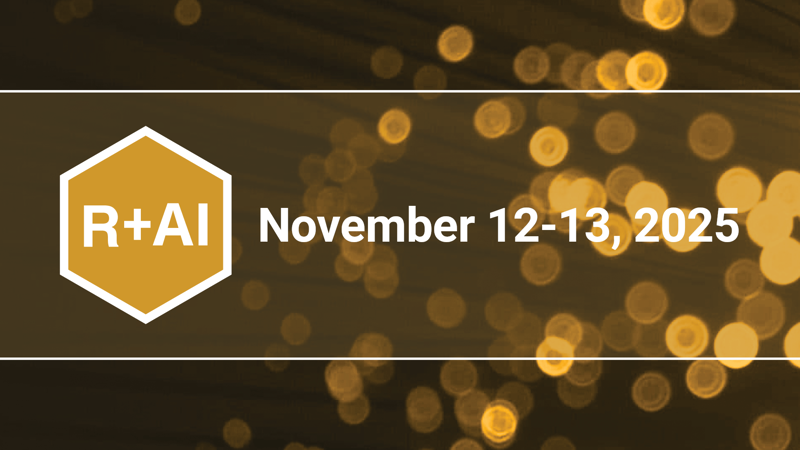
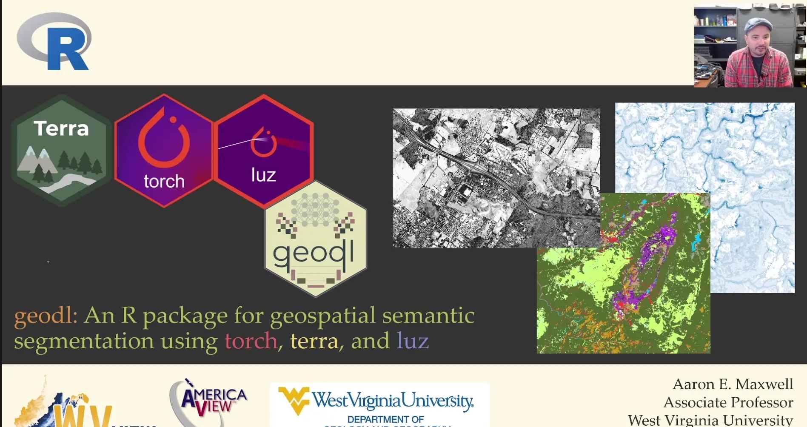
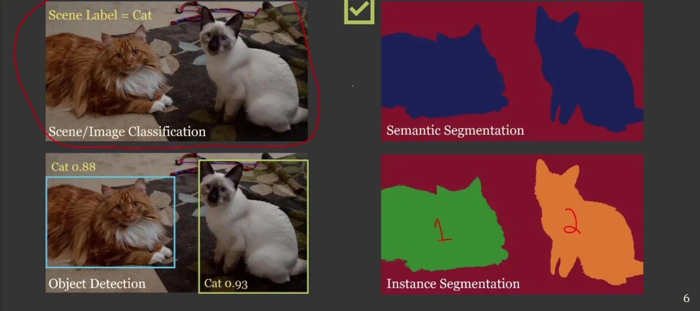
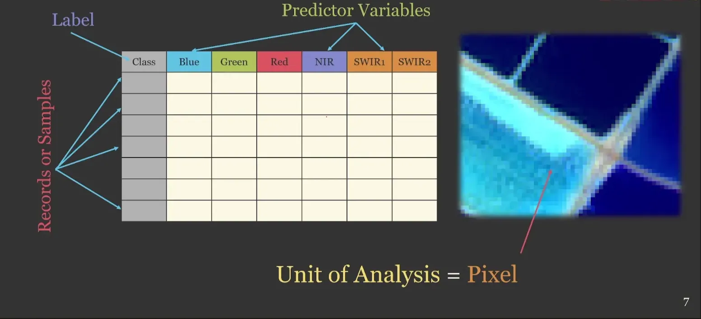
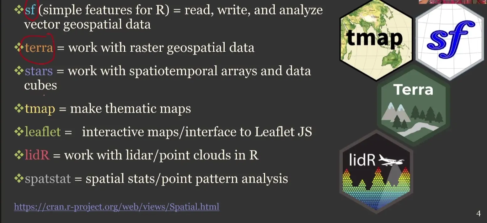
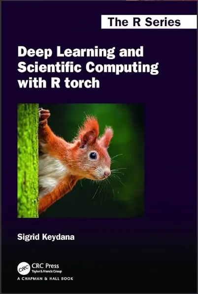
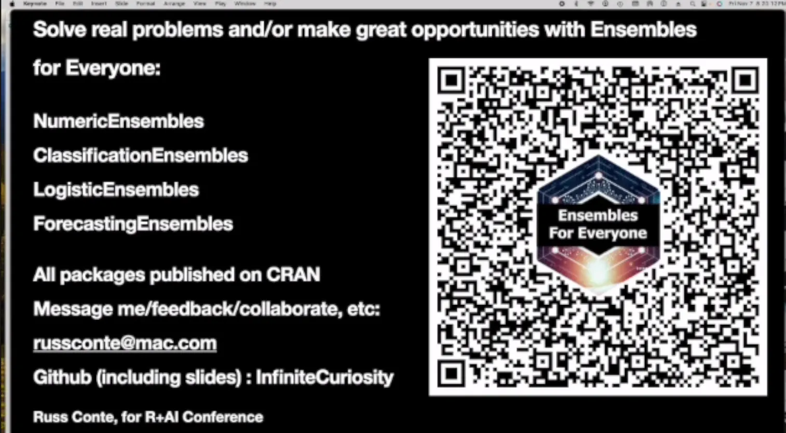
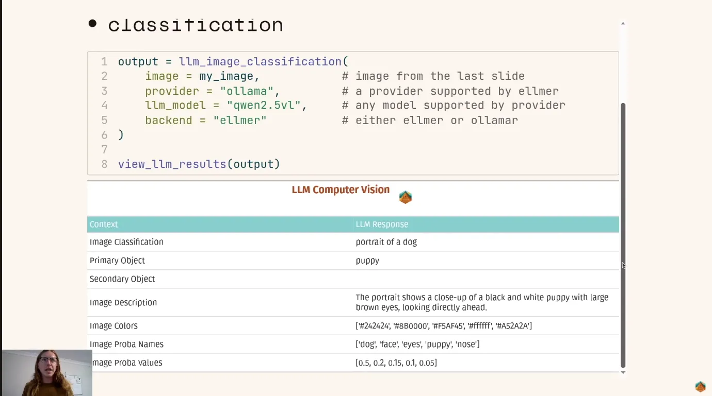
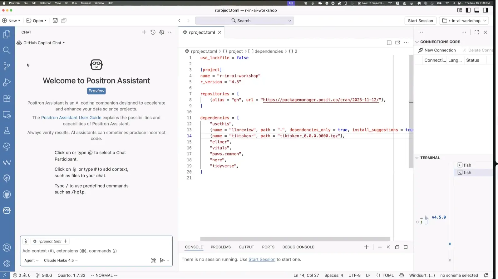

Code
# install.packages("btw")R + AI - Evento Posit
Aqui é uma pausa para falar de dados.
Novidades do universo R e da ciência de dados
O R+AI 2025, realizado nos dias 12 e 13 de novembro, foi um marco para quem trabalha com R e está acompanhando a evolução da inteligência artificial aplicada ao nosso ecossistema.

O evento reuniu especialistas do mundo todo para discutir como LLMs, agentes, visão computacional e automação inteligente já estão transformando fluxos de trabalho analíticos, estatísticos e de engenharia de dados.
Foram muitas palestras de alto impacto, e impossível capturar tudo em uma única newsletter. Por isso, selecionei algumas apresentações que considero essenciais para entender para onde o R está caminhando nessa nova era de IA aplicada. São talks que mostram, na prática, como integrar modelos de linguagem, construir agentes, criar pipelines automatizados e até usar IA para gerar arquivos de branding ou interpretar imagens diretamente no R.
Os resumos estão aqui para abrir portas, mas o valor real está na exploração profunda. Cada seção traz os links diretos para os pacotes, repositórios e páginas oficiais, para você mergulhar nos detalhes e testar no seu próprio ambiente.
O R está evoluindo rápido, muito rápido!
Enquanto assistia ia construindo esse material, foi um desafio capturar o máximo de detalhes para os meus estudos e para abrir as portas para quem não participou.

Foram 20 palestras, divididas em 6 grandes temas:
Joe Cheng (CTO da Posit) trouxe uma fala direta sobre o papel dos LLMs (Large Language Models) na ciência de dados: poderosos, mas imprevisíveis. A questão não é eliminá-los, e sim mantê-los sob supervisão humana e dentro de seus limites.
A Posit defende o uso focado e ético da inteligência artificial. Na palestra “Keeping LLMs in Their Lane: Focused AI for Data Science and Research”, Cheng explicou que os LLMs são ferramentas valiosas, mas não substitutos do raciocínio humano.
Correção – LLMs podem gerar respostas convincentes, mas erradas.
Transparência – Ainda não compreendemos totalmente como produzem suas respostas.
Reprodutibilidade – São modelos não determinísticos, com variação entre execuções.
Esses três pontos entram em conflito direto com os princípios da pesquisa científica: precisão, clareza e repetição confiável.
LLMs não são ruins, apenas irregulares
O palestrante mostrou que o desempenho dos modelos segue uma curva irregular (“jagged”), alternando entre acertos brilhantes e erros absurdos. No teste prático com R (length()), o modelo acertou listas pequenas, mas errou completamente ao lidar com arrays grandes prova de que não entende dados, apenas texto.
Micromanage: manter um ciclo humano-IA apertado, com revisão constante.
Supervisão técnica: validar outputs, especialmente em tarefas analíticas.
Ferramentas abertas: usar pacotes reprodutíveis como R, Quarto e Databot.
Mensagem central
“LLMs são poderosos, mas precisam permanecer no seu limite como assistentes de produtividade, não como substitutos do julgamento humano.” Joe Cheng, CTO da Posit
O futuro da IA na ciência de dados depende mais de disciplina e transparência do que de novas arquiteturas.
Ferramentas open-source (R, Quarto, Shiny) são a ponte entre inovação e responsabilidade.
A chave é revisar, interpretar e documentar, não apenas automatizar.
Jasmine Daly mostrou que a IA não é uma ameaça à sua carreira em R é um multiplicador cognitivo.
A diferença está em como você a usa: para expandir sua capacidade, não substituir sua prática.
Gerindo uma consultoria de dados sozinha, Jasmine usou IA (Claude) para ganhar tempo mental e ampliar impacto.
O foco não é automatizar por automatizar, mas criar espaço para o que importa pensamento estratégico, criatividade e aprendizado contínuo.

Antes da IA, 85% do tempo ia para código de cliente e só 15% para o negócio.
Com IA, ela reduziu a carga operacional e conseguiu investir em comunidade, marketing e inovação.

Dica prática:
Use a IA para estruturar tarefas repetitivas (documentação, testes, padrões de código), e redirecione a energia para decisões de valor e novas ideias.
Ela criou pacotes inteiros em dias, como:
{shinyfa}: mapeia a estrutura de apps Shiny automaticamente.
{avilistr}: organiza dados de taxonomia de aves, feito em um fim de semana.
Dica
Experimente transformar ideias “de gaveta” em projetos reais com auxílio da IA.
A IA acelera execução, mas o direcionamento técnico e criativo ainda é seu.
Antes:
“Será que consigo fazer isso no tempo e com minhas habilidades atuais?”
Agora:“Sim, consigo. Como posso entender profundamente o problema e as restrições do cliente?”
Dica
Use a IA para ampliar o escopo do que você aceita fazer, mas mantenha controle total sobre a arquitetura e as decisões técnicas.
Você é o gerente: define estratégia e decide.
Claude é o desenvolvedor sênior: executa, mas precisa de supervisão.
Human in the loop: revisão linha a linha, commits incrementais e validação final.
Dica
Sempre revise o código, use prompts específicos e mantenha logs e versões.
IA sem revisão é atalho para retrabalho.
Três erros clássicos com a IA e o que aprender com eles:
| Erro | O que ensina | Estratégia |
|---|---|---|
| Confusão com pacotes | Leia documentação antes de usar | Envie links diretos da doc para a IA |
| Suposições de dados | Valide nomes e tipos antes do código | Use str(data) ou ferramentas como {mcptools} |
| Abstração excessiva | Simplicidade é habilidade | Peça várias opções e escolha a mais simples |
Dica
Cada erro com a IA é um treino de intuição em R.
Quanto mais volume de iterações, mais rápida sua curva de aprendizado.
“Quando a IA libera sua capacidade mental, você não fica preguiçoso, você se torna estratégico.”
Jasmine Daly
Atenção:
O que eu sempre farei por mim mesmo?
Em que a IA pode me ajudar?
O que eu preciso entender profundamente?
O que posso delegar com confiança?
Blog da Jasmine: https://www.dalyanalytics.com/blog
O pacote btw preenche a lacuna entre o ambiente R e modelos de linguagem (LLMs), oferecendo ferramentas que ajudam na descrição automatizada de data-frames, funções, pacotes, documentação e ambiente e promove colaboração eficiente entre humano + IA.
Instale o pacote:
# install.packages("btw")Ou use a versão de desenvolvimento via:
# pak::pak("posit-dev/btw").Use btw() para exportar o contexto do seu ambiente R (data frames, pacotes, funções) para a área de transferência, pronto para colar em um chat de LLM.
Inicie um chat interativo no RStudio com btw_app() ou um cliente com btw_client() para integrar LLMs ao seu ambiente R.
Registre ferramentas para um cliente LLM via btw_tools() ou ative o servidor MCP btw_mcp_server()para permitir que o LLM leia diretamente documentação, arquivos, ambiente do projeto.
Benefício principal: menos tempo “pilotando” manualmente o contexto para o LLM, mais tempo focado em decisões analíticas, arquitetura de solução e intervenção estratégica.
Página oficial pacote: https://posit-dev.github.io/btw/ posit-dev.github.io
CRAN: https://cran.r-project.org/package=btw cran.r-project.org

Desenvolvido por Mohamed El Fodil Ihaddaden (HDI Global SE), o pacote mini007 traz para o R um framework leve e extensível para criar e coordenar múltiplos agentes de IA cooperativos.
Ele permite decompor e resolver tarefas complexas de forma estruturada, sem necessidade de infraestrutura externa.
Com a evolução dos grandes modelos de linguagem, cresce o interesse em arquiteturas baseadas em agentes capazes de lidar com processos de raciocínio complexos e de múltiplas etapas.
O mini007 resolve essa lacuna no ecossistema R, oferecendo uma interface de alto nível para definir agentes especializados que trabalham de forma coordenada, aproveitando a base do pacote ellmer.
Cada agente possui identidade própria, conjunto de instruções e memória, o que permite especialização em tarefas específicas.
O agente líder recebe uma solicitação ampla, divide em subtarefas lógicas, delega aos agentes apropriados e integra as respostas em uma saída coerente.
# install.packages("mini007")
library(mini007)Warning: pacote 'mini007' foi compilado no R versão 4.5.2Integração com ellmer é compatível com qualquer modelo de linguagem suportado, como OpenAI, Claude ou Gemini.
Criar agentes especializados Agent()
Definir o agente líder LeadAgent()
Executar a orquestração run_agents() ou lead_run()
Aplicações Recuperação de informações, sumarização, tradução, e pipelines analíticos coordenados.
Human in the Loop (HITL): Possibilidade de inserir revisão humana em etapas específicas do processo.
Memória e identidade individual de agentes
Decomposição e delegação automática de tarefas
Encadeamento de resultados entre agentes
Compatibilidade com múltiplos modelos de linguagem via ellmer
Flexibilidade para integração em fluxos complexos de ciência de dados
Pacote ellmer: https://ellmer.tidyverse.org/index.html

Apresentado por Umair Durrani (Presage Group Inc.), o pacote brandthis mostra como automatizar a criação de arquivos _brand.yml e temas para ggplot2, usando LLMs via ellmer.
O fluxo permite gerar identidade visual completa para Quarto, Shiny e visualizações com rapidez e consistência.
Comunicar resultados com identidade visual consistente sempre exige trabalho manual, como paletas, logos, temas, fontes, espaçamentos e estilos precisam ser replicados em cada documento, dashboard e gráfico.
O Quarto resolveu parte desse problema criando o padrão _brand.yml, um arquivo central onde você define cores, fontes, logos e estilo para todo o seu ecossistema de documentos.
Mas construir esse arquivo do zero consome tempo. A proposta do brandthis é deixar que um LLM gere isso para você a partir de imagens das diretrizes de marca e instruções simples.
O usuário envia capturas de tela da identidade visual da empresa.
O brandthis envia as imagens + instruções para um LLM (por exemplo, Google Gemini via ellmer).
O modelo retorna um _brand.yml completo e editável.
paletas de cores
escalas para ggplot2
temas coerentes com a identidade visual
Tudo pode ser exportado para uso em Quarto, R Markdown e Shiny.
A funcionalidade depende do recurso de saída estruturada do ellmer, garantindo que o LLM devolva um arquivo YAML válido.
# remotes::install_github("durraniu/brandthis")Adicione ao .Renviron: (esse tipo de arquivo é usado no R para guardar suas chaves de forma segura)
GOOGLE_API_KEY
OPENROUTER_API_KEY
ou outra suportada pelo ellmer
# personal_brand <- brandthis::create_brand(
# prompt = "Meu nome é Jennifer Luz Lopes.",
# img = "minha-img.png",
# type = "personal",
# chat_fn = ellmer::chat_google_gemini)# company_brand <- brandthis::create_brand(
# "Company name is x",
# img = c("x-font.png","xt-palette.jpeg","x-logo.png"),
# type = "company",
# chat_fn = ellmer::chat_google_gemini)# suggested_scales <- brandthis::suggest_color_scales(company_brand, "paletteer")
# color_palettes <- brandthis::create_color_palette(company_brand)O brand no Quarto é uma forma de centralizar elementos de identidade visual em um único arquivo _brand.yml. Ele permite definir:
paletas de cores
fontes
logos
margens, espaçamentos e estilos
temas de tabelas e blocos
variantes claras e escuras
Com isso, qualquer documento Quarto pode herdar automaticamente o estilo, garantindo consistência imediata entre relatórios, dashboards e apresentações.


GitHub do brandthis: https://github.com/durraniu/brandthis
Inspirações de brand: https://posit-dev.github.io/brand-yml/inspiration/brand-guidelines/posit/
Documentação do quarto/_brand.yml: https://quarto.org/docs/authoring/brand.html

Apresentado por Aaron Maxwell (West Virginia University). O pacote geodl coloca o R no centro do deep learning para dados geoespaciais, permitindo segmentação semântica em nível de pixel sem necessidade de Python ou PyTorch.

O geodl elimina essa dependência ao integrar torch, terra e luz em um fluxo completo para treinar modelos de visão computacional geoespacial diretamente no R.
A lógica central do pacote é simples. Cada pixel da imagem se torna uma unidade de análise com bandas espectrais como variáveis preditoras.

A partir disso, o geodl oferece arquiteturas de CNN robustas como UNet, UNet-MobileNetv2, UNet3+ e HRNet.
O pacote também define funções utilitárias para criar conjuntos de dados, gerar máscaras, visualizar chips, construir DataLoaders geoespaciais e prever grandes áreas usando modelos treinados.
O fluxo de treinamento pode ser feito com chips pré-salvos ou gerados dinamicamente.
Isso reduz o atrito na criação dos datasets e facilita o ajuste de modelos em diferentes resoluções ou regiões de interesse.
O trabalho enfatiza ainda ferramentas de avaliação, geração de métricas, produção de mapas e extração de parâmetros de superfície terrestre.
geodl não exige Python. Todo o pipeline roda nativamente no R com aceleração por GPU.
Para começar, é essencial dominar terra (rasters) e sf (vetores).
O fluxo recomendado inclui criar chips, definir datasets, escolher uma arquitetura UNet, treinar e avaliar.
Para produção, o geodl permite prever áreas amplas e gerar mapas diretamente do raster.
A comunidade está ativa e o desenvolvimento futuro inclui Transformers, autoencoders e modelos de regressão.
Arquiteturas CNN prontas para uso
Integração nativa com torch, terra e luz
Criação automatizada de datasets e máscaras
Visualização de chips, batches e previsões
Avaliação de modelos com métricas padrão
Predição espacial em larga escala


Russ Conte apresentou três pacotes publicados no CRAN que mostram como modelos de deep learning podem ser configurados em segundos, rodar em menos de um minuto e ainda superar resultados registrados em competições e benchmarks tradicionais.
A proposta foi mostrar como R pode entregar resultados de ponta em modelagem preditiva usando deep learning totalmente automatizado.
Para isso, ele apresentou três pacotes:
NumericEnsembles
ClassificationEnsembles
LogisticEnsembles
O funcionamento é sempre o mesmo. Uma única linha de código inicia a criação de dezenas de modelos individuais e de conjuntos, combinando técnicas tradicionais e arquiteturas de deep learning.
Os pacotes cuidam automaticamente de otimização, validação cruzada, tuning de hiperparâmetros e seleção de variáveis.
O usuário apenas executa; o pacote decide a melhor estratégia.
O ponto central da palestra foi demonstrar ao vivo que os modelos de deep learning produzem consistentemente os melhores resultados dentro dos ensembles.
Os pacotes foram projetados para explorar isso: a automatização identifica quando os modelos profundos superam modelos tradicionais e os integra nas combinações finais.
Objetivo: regressão
Exemplo: análise do Boston Housing em 1 linha de código, superando 20 anos de melhores resultados no Kaggle.
O pacote cria automaticamente:
23 modelos individuais
17 ensembles
Oito modos de otimização de colunas
Tuning, validação e seleção automatizados
Resultado apresentado: modelos de deep learning dominam tanto no desempenho individual quanto nos ensembles finais.
Links GitHub: https://github.com/InfiniteCuriosity/NumericEnsembles
Objetivo: classificação
Exemplo: 100% de acurácia no dataset Dry Beans com setup em segundos.
O pacote replica a lógica do NumericEnsembles, mas adaptada para classificação. A demonstração mostrou os métodos profundos elevando a performance até a acurácia máxima.
Links GitHub: https://github.com/InfiniteCuriosity/NumericEnsembles
Objetivo: classificação binária
Exemplo: resultados superiores no dataset Pima Indians, com destaque para o modelo BayesRNN.
Assim como os demais, o pacote cria e otimiza modelos individuais e conjuntos em minutos. O BayesRNN foi apontado como um dos modelos de maior desempenho na análise ao vivo.
Links GitHub: https://github.com/InfiniteCuriosity/LogisticEnsembles

Frankie Hull apresentou o kuzco, um pacote que transforma visão computacional em algo direto e orientado por linguagem natural.
Combinando {ellmer} e {ollamar}, ele permite analisar imagens em R com prompts, sem precisar treinar modelos, ajustar tensores ou entender redes profundas.
O kuzco nasce para tornar a visão computacional tão simples quanto conversar.
Em vez de pipelines complexos, arquitetura convolucional, camadas de pré-processamento ou dependências pesadas, o usuário só precisa de uma imagem e um prompt, como “o que há nesta foto?” ou “classifique os objetos visíveis”.
A lógica é orientada por LLMs. O pacote usa modelos multimodais via {ellmer}, seja com Ollama (local) ou serviços externos.
Isso reduz a barreira técnica e democratiza o acesso à análise de imagens, oferecendo detecção, classificação, extração de texto, descrição e até análises personalizadas guiadas por instruções.
O pacote padroniza saídas, cria uma estrutura simples para retornos consistentes e oferece um caminho prático para quem quer trabalhar com visão computacional em R, mas não deseja (ou não pode) recorrer a keras, torch ou pipelines pesados de deep learning.
# devtools::install_github("frankiethull/kuzco")Fluxo simples:
# library(kuzco)
# library(ollamar)
#
# img <- file.path(system.file(package = "kuzco"), "img/test_img.jpg")
#
# llm_image_classification(
# llm_model = "qwen2.5vl",
# image = img,
# backend = "ollamar")

Reconhecimento
Sentimento em imagens
Extração de texto
Geração de alt-text
Tarefas personalizadas por prompt
Escolha rodar com modelos locais (privacidade e custo zero) ou remotos (maior performance).
Todos os prompts podem ser personalizados.
Funciona em qualquer workflow de análise em R.
Devin Pastoor- Chief Technology and Product Officer - A2-AI
Aathira Anil Kumar- Software Engineer - A2-AI
Xu Fei - Senior Solutions Engineer - A2-Ai
Apresentado por Devin Pastoor, Aathira Anil Kumar e Xu Fei (A2-AI).
O foco do workshop foi acelerar a curva de aprendizado para quem está começando a integrar IA generativa com R.
A equipe mostrou, passo a passo, como transformar prompts em fluxos de trabalho agentivos, utilizando ellmer, btw e utilitários para chamadas HTTP, validação e registro.
A mensagem principal: modelos não trabalham sozinhos.
O comportamento final depende do system prompt, do histórico, das ferramentas disponíveis e da aplicação que envolve o modelo.
A demonstração comparou a mesma pergunta feita no Positron e no Claude Chat. Mesmo usando o mesmo modelo, as respostas foram diferentes porque o ambiente muda o contexto enviado ao LLM.
O Positron injeta informações do projeto, arquivos abertos, variáveis do ambiente e ferramentas declaradas. Isso faz com que o modelo gere código R executável, enquanto o mesmo prompt fora do ambiente gera respostas mais genéricas.
Os instrutores explicaram como funciona o ciclo agentivo. A cada solicitação, o LLM decide se responde diretamente ou se invoca uma ferramenta.
A aplicação executa a ação e devolve o resultado ao histórico. Todo o histórico é reenviado a cada rodada, o que torna o tamanho da janela de contexto crucial.
Na demonstração, mais de 17 mil tokens foram usados para pedir um gráfico simples do mtcars, ilustrando como o contexto afeta custo e coerência.
Esse entendimento leva ao ponto mais importante: quem precisa de precisão deve controlar explicitamente o que o modelo deve fazer.
Por exemplo, especificar que você quer apenas o código evita que a ferramenta gere e escreva arquivos no projeto. A equipe também apresentou o arquivo agents.md, que permite ao usuário controlar o comportamento padrão do agente dentro do projeto, unificando estilo e fluxo de respostas.
Use chats novos quando quiser evitar interferência de histórico.
Seja explícita ao pedir código ou ações no projeto.
Tenha clareza de que a ferramenta, não o modelo, executa ações como criar arquivos.
Controle comportamento com agents.md para consistência entre modelos e ferramentas.
Monitore sempre o tamanho da janela de contexto para evitar respostas inconsistentes.
Aproveite ellmer e btw para padronizar interações e enriquecer o contexto do modelo.

Positron (IDE da Posit) - https://positron.posit.co/
Claude (Anthropic) - https://claude.ai/
ellmer
https://github.com/A2-AI/ellmer
btw
https://github.com/A2-AI/btw
Ollama (para modelos locais)
https://ollama.com
ollamar (R + Ollama)
https://github.com/chainhaus/ollamar
Pessoal, o R+AI deixou claro que não estamos mais falando de futuro. Estamos falando de como trabalhamos hoje. A combinação entre R e modelos de linguagem já redefiniu como criamos, analisamos, comunicamos e automatizamos.
As palestras que selecionei mostram isso por diferentes ângulos: desde frameworks para agentes, visão computacional simplificada, branding automatizado, até fluxos completos de orquestração com LLMs dentro do próprio RStudio.
Não consegui trazer todas as sessões, mas fiz questão de destacar aquelas que ampliam a nossa visão sobre o que significa trabalhar com dados + IA em 2025.
Agora é com vocês. Explorem os links, teste os pacotes, coloque as ideias para rodar no seu workflow. Este é o momento de transformar curiosidade em prática, e prática em vantagem real no seu dia a dia com R.
Seguimos juntos, aprendendo rápido e construindo coisas que, até pouco tempo atrás, pareciam impossíveis.
Que cada gole desperte uma nova ideia.
Que cada script abra uma nova conversa.
Que o Café com R, se torne um ponto de encontro nosso!